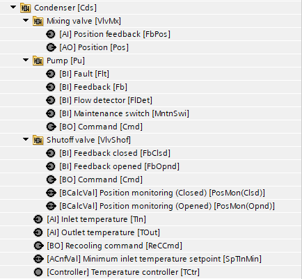
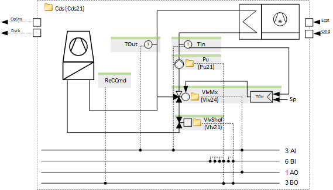
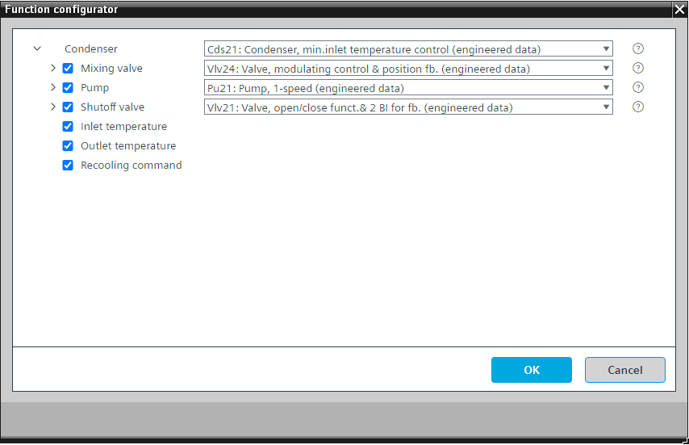

[Cds21] 冷凝器，最低入口温度控制
Program block, name / node subtype: [Cds21] Condenser, minimum inlet temperature control
Library hierarchy: Cooling and refrigeration equipment
Family: Cds
项目树 | 图表 |
|---|---|
|
 |  |
Configurator


程序块存储在没有 I/Os. 的库中 使用auto-create and auto-connect函数创建 I/Os 和 /or 将它们连接到接口块，例如 R_A、CMD_B。或者，从包含库中预定义 I/Os 的文件夹中取出 I/Os，并从工厂中取出 /or，并将它们连接到接口块。
通过可选泵和针对冷水机组运行进行优化的混合阀来控制冷凝器。
该程序块具有以下可选功能：
Option: Mixing valve (1xAO, 1xAI)
控制混合阀 (Vlv24) 的位置。
如果使用可选的混合阀，则由以下功能控制：
出口温度的温度控制（“混合阀”选项的一部分）。
入口温度由 PID 控制器控制。将传感器值与最小入口温度设定值进行比较。
我们建议使用入口温度传感器。
Option: Pump (1xBO, 4xBI)
控制泵 (Pu21)。可以有不同的替代方案，例如 TwnPu21。
当冷凝器运行时泵运行，并且可选的截止阀打开。
Option: Shutoff valve (1xBO, 2xBI)
控制冷凝器运行时打开的截止阀 (Vlv21)。
Option: Inlet temperature (1xAI)
读取入口温度信号。
Option: Outlet temperature (1xAI)
读取出口温度信号。
Option: Recooling command (1xBO)
控制再冷却系统的输出接口。当冷凝器运行时它处于活动状态。
姓名 | 描述 | 类型 | 报警/通知类 | 趋势/类型 |
|---|---|---|---|---|
Pu | Pump | N/A | N/A | |
TOut | Outlet temperature | AI：模拟输入 | No | 是的，2 |
TIn | Inlet temperature | AI：模拟输入 | No | 是的，2 |
SpTInMin | Minimum inlet temperature setpoint | ACnfVal: Analog configuration value | N/A | No |
VlvMx | Mixing valve | N/A | N/A | |
属于该元素的其他元素： TCtr | Temperature controller | Ctr: Controller | ||||
VlvShof | Shutoff valve | N/A | N/A | |
ReCCmd | Recooling command | BO：二进制输出 | No | 是的，4 |